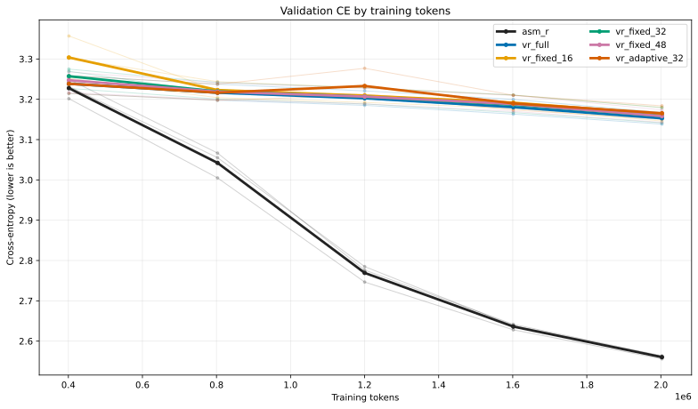
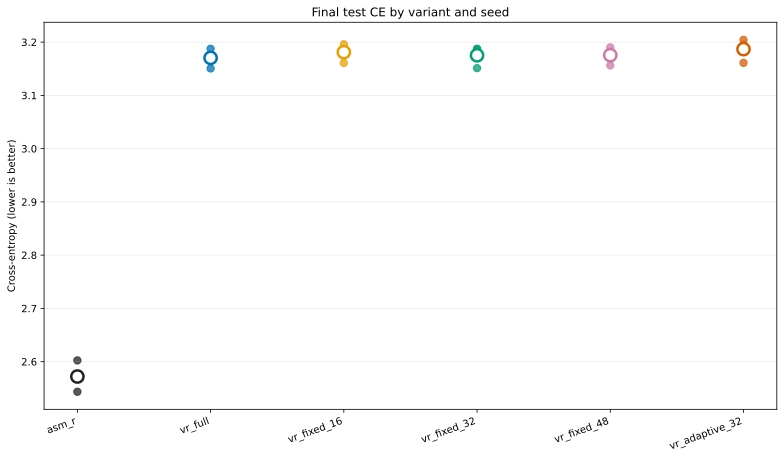
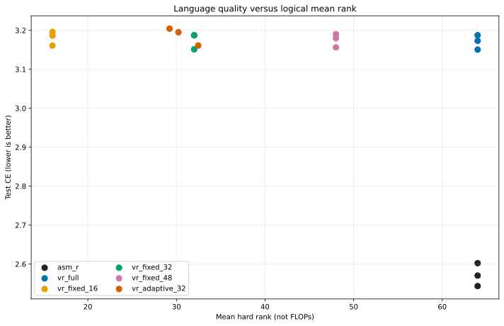
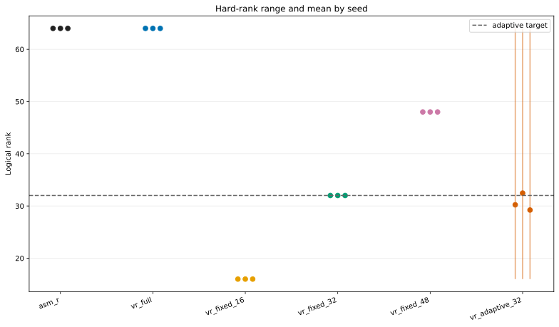
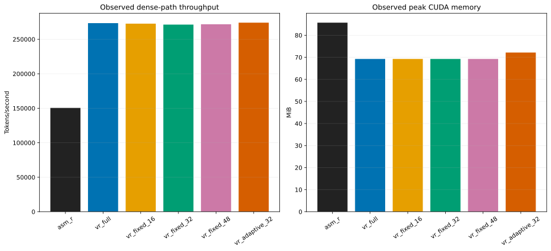
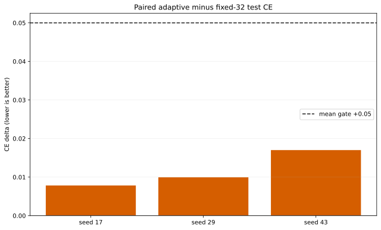

Small-scale language gate. Dense execution; no hardware speedup claim.
| complete_matrix | PASS |
| all_runs_finite | PASS |
| matched_token_budget | PASS |
| streaming_parity | PASS |
| adaptive_budget | PASS |
| adaptive_varies | PASS |
| controller_receives_gradient | PASS |
| quality_near_fixed32 | PASS |
| capacity_below_full | PASS |





